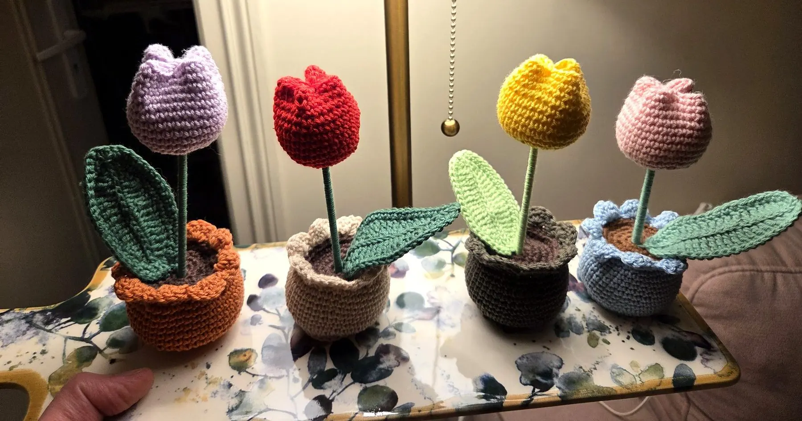
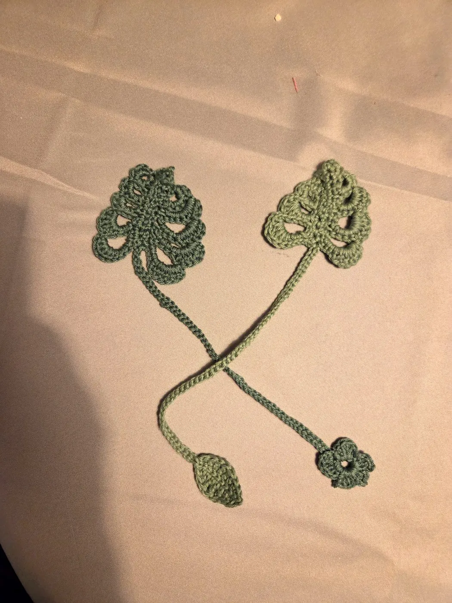
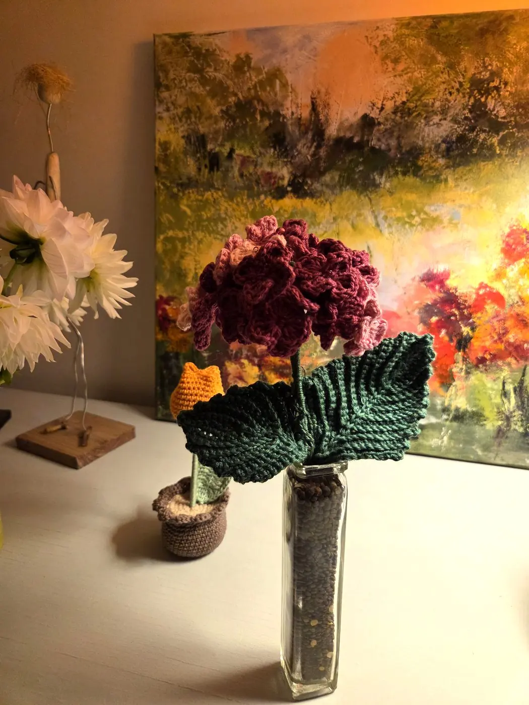
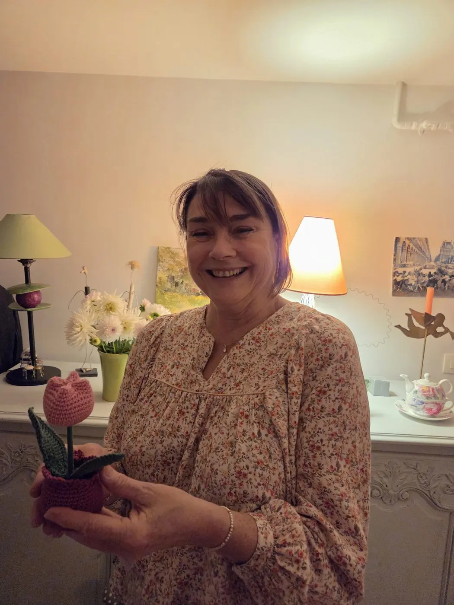

Le best-seller
Tulipe au crochet en pot
16 cm de haut, en coton. Fleur et pot au choix parmi 7 et 5 coloris.
16 €Voir la tulipe
Chaque tulipe est crochetée à la main par Catherine, dans le pot et les couleurs de votre choix. Un petit bouquet durable pour faire plaisir, ou pour se faire plaisir.

16 € la tulipeChaque pièce est crochetée à la main, une par une. Deux tulipes ne sont jamais tout à fait identiques.
Choisissez la couleur de la fleur et celle du pot pour composer la tulipe qui vous ressemble.
Sans arrosage ni entretien, elle égaie un bureau, une étagère ou une table de chevet toute l'année.
Chaque tulipe est crochetée à la commande : c'est vous qui choisissez la couleur de la fleur et celle du pot. Une tulipe rouge dans un pot bleu ciel, une rose poudré dans un pot terracotta : il y a de quoi composer la tulipe qui vous ressemble, ou celle de la personne à qui vous l'offrez.
Votre couleur n'est pas dans la liste ? Précisez-la dans votre commande, Catherine vous répondra.
Composer ma tulipe
16 cm de haut, en coton. Fleur et pot au choix parmi 7 et 5 coloris.

Une feuille ajourée en coton, avec son cordon et sa petite fleur.

De grosses fleurs bordeaux et rose, à poser dans un vase. D'autres créations arrivent.

J'ai été infirmière toute ma vie, au service des autres. Aujourd'hui retraitée, je crochète depuis deux ans, avec la nature comme première inspiration.
J'ai d'abord crocheté pour faire plaisir à mes proches. J'ai maintenant envie de partager mon travail plus largement, pour que vous puissiez à votre tour faire plaisir avec une petite création faite main.
Lire mon histoireJe choisis mes couleurs et j'ajoute mes articles au panier, autant que je veux.
J'indique mon adresse pour un envoi (5 €), ou je choisis de retirer ma commande au marché de Lisieux.
Le paiement se fait en quelques clics, sur le site sécurisé de PayPal.
Chaque pièce est réalisée à la commande et expédiée sous une semaine, ou remise au marché le samedi choisi.